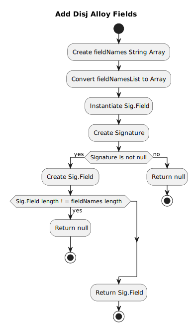
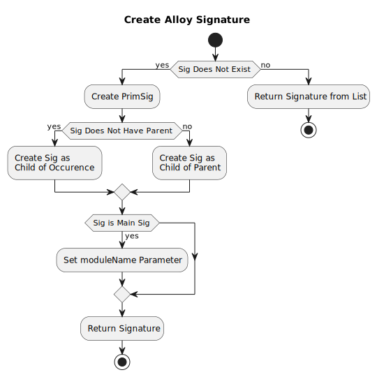
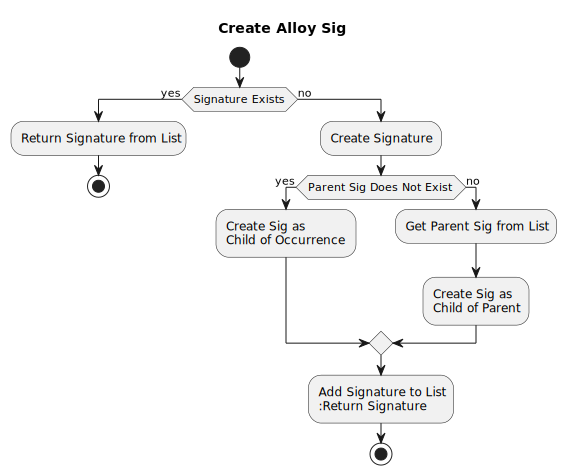
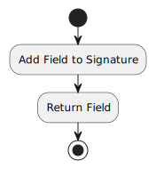

Class ToAlloy
- java.lang.Object
-
- edu.gatech.gtri.obm.translator.alloy.fromxmi.ToAlloy
-
public class ToAlloy extends Object
The Class ToAlloy.
-
-
Method Summary
All Methods Instance Methods Concrete Methods Modifier and Type Method Description edu.mit.csail.sdg.ast.Sig.FieldaddAlloyTransferField(String fieldName, edu.mit.csail.sdg.ast.Sig ownerSig)Adds the alloy transfer field.voidaddCardinalityEqualConstraintToField(edu.mit.csail.sdg.ast.Sig.Field field, edu.mit.csail.sdg.ast.Sig.PrimSig ownerSig, int num)Adds the cardinality equal constraint to field.voidaddCardinalityEqualConstraintToField(String fieldName, edu.mit.csail.sdg.ast.Sig.PrimSig ownerSig, int num)Adds the cardinality equal constraint to field.voidaddCardinalityGreaterThanEqualConstraintToField(edu.mit.csail.sdg.ast.Sig.Field field, edu.mit.csail.sdg.ast.Sig.PrimSig ownerSig, int num)Adds the cardinality greater than equal constraint to field.voidaddCardinalityGreaterThanEqualConstraintToField(String fieldName, edu.mit.csail.sdg.ast.Sig.PrimSig ownerSig, int num)Adds the cardinality greater than equal constraint to field.edu.mit.csail.sdg.ast.Sig.Field[]addDisjAlloyFields(List<String> fieldNamesListWithSameType, String typeSigName, edu.mit.csail.sdg.ast.Sig.PrimSig ownerSig)Adds the disj alloy fields.
voidaddEqual(edu.mit.csail.sdg.ast.Sig.PrimSig ownerSig, String fieldName1, String fieldName2)Adds the equal.voidaddInputs(String sigName, String fieldName)Adds the inputs.voidaddOutputs(String sigName, String fieldName)Adds the outputs.voidaddSteps(Map<String,Set<String>> stepPropertiesBySig)Adds the steps.StringcreateAlloyFile(File outputFile, Set<edu.mit.csail.sdg.ast.Sig.Field> parameterFields)Creates the alloy file.edu.mit.csail.sdg.ast.Sig.PrimSigcreateAlloySig(String name, edu.mit.csail.sdg.ast.Sig.PrimSig parentSig, boolean isMainSig)Creates the alloy sig.
edu.mit.csail.sdg.ast.Sig.PrimSigcreateAlloySig(String name, String parentName)Creates the alloy sig.
voidcreateBijectionFilteredHappensBeforeAndAddToOverallFact(edu.mit.csail.sdg.ast.Sig ownerSig, edu.mit.csail.sdg.ast.Expr from, edu.mit.csail.sdg.ast.Expr to)Creates the bijection filtered happens before and add to overall fact.voidcreateBijectionFilteredHappensDuringAndAddToOverallFact(edu.mit.csail.sdg.ast.Sig ownerSig, edu.mit.csail.sdg.ast.Expr from, edu.mit.csail.sdg.ast.Expr to)Creates the bijection filtered happens during and add to overall fact.voidcreateFnForTransferAndAddToOverallFact(edu.mit.csail.sdg.ast.Sig.PrimSig ownerSig, edu.mit.csail.sdg.ast.Expr transfer, String sourceTypeName, String targetTypeName)Creates the fn for transfer and add to overall fact.voidcreateFnForTransferBeforeAndAddToOverallFact(edu.mit.csail.sdg.ast.Sig.PrimSig ownerSig, edu.mit.csail.sdg.ast.Expr transfer, String sourceTypeName, String targetTypeName)Creates the fn for transfer before and add to overall fact.voidcreateFunctionFilteredHappensBeforeAndAddToOverallFact(edu.mit.csail.sdg.ast.Sig ownerSig, edu.mit.csail.sdg.ast.Expr from, edu.mit.csail.sdg.ast.Expr to)Creates the function filtered happens before and add to overall fact.voidcreateInverseFunctionFilteredHappensBeforeAndAddToOverallFact(edu.mit.csail.sdg.ast.Sig ownerSig, edu.mit.csail.sdg.ast.Expr from, edu.mit.csail.sdg.ast.Expr to)Creates the inverse function filtered happens before and add to overall fact.edu.mit.csail.sdg.ast.Sig.PrimSiggetSig(String name)Gets the sig.voidnoInputs(String sigName)No inputs.voidnoInputsOutputs(edu.mit.csail.sdg.ast.Sig sig)No inputs outputs.voidnoOutputs(String sigName)No outputs.
-
-
-
Constructor Detail
-
ToAlloy
public ToAlloy(String working_dir)
Instantiates a new to alloy.
- Parameters:
working_dir- where required alloy library (Transfer) is locating
-
-
Method Detail
-
getSig
public edu.mit.csail.sdg.ast.Sig.PrimSig getSig(String name)
Gets the sig.- Parameters:
name- the name- Returns:
- the sig
-
createAlloySig
public edu.mit.csail.sdg.ast.Sig.PrimSig createAlloySig(String name, edu.mit.csail.sdg.ast.Sig.PrimSig parentSig, boolean isMainSig)
Creates the alloy sig.
- Parameters:
name- of sigparentSig- PrimSig or null (if null, Occurrence will be the parentSig)isMainSig- mainSig or not- Returns:
- the prim sig
-
createAlloySig
public edu.mit.csail.sdg.ast.Sig.PrimSig createAlloySig(String name, String parentName)
Creates the alloy sig.
- Parameters:
name- the nameparentName- the parent name- Returns:
- the prim sig
-
addAlloyTransferField
public edu.mit.csail.sdg.ast.Sig.Field addAlloyTransferField(String fieldName, edu.mit.csail.sdg.ast.Sig ownerSig)
Adds the alloy transfer field.
- Parameters:
fieldName- the field nameownerSig- the owner sig- Returns:
- the field
-
addDisjAlloyFields
public edu.mit.csail.sdg.ast.Sig.Field[] addDisjAlloyFields(List<String> fieldNamesListWithSameType, String typeSigName, edu.mit.csail.sdg.ast.Sig.PrimSig ownerSig)
Adds the disj alloy fields.
- Parameters:
fieldNamesListWithSameType- the field names list with same typetypeSigName- the type sig nameownerSig- the owner sig- Returns:
- the sig. field[]
-
createBijectionFilteredHappensBeforeAndAddToOverallFact
public void createBijectionFilteredHappensBeforeAndAddToOverallFact(edu.mit.csail.sdg.ast.Sig ownerSig, edu.mit.csail.sdg.ast.Expr from, edu.mit.csail.sdg.ast.Expr to)Creates the bijection filtered happens before and add to overall fact.- Parameters:
ownerSig- the owner sigfrom- the fromto- the to- See Also:
Alloy.createBijectionFilteredToOverallFact(Sig, Expr, Expr, edu.mit.csail.sdg.ast.Func)
-
createBijectionFilteredHappensDuringAndAddToOverallFact
public void createBijectionFilteredHappensDuringAndAddToOverallFact(edu.mit.csail.sdg.ast.Sig ownerSig, edu.mit.csail.sdg.ast.Expr from, edu.mit.csail.sdg.ast.Expr to)Creates the bijection filtered happens during and add to overall fact.- Parameters:
ownerSig- the owner sigfrom- the fromto- the to- See Also:
Alloy.createBijectionFilteredToOverallFact(Sig, Expr, Expr, edu.mit.csail.sdg.ast.Func)
-
createFunctionFilteredHappensBeforeAndAddToOverallFact
public void createFunctionFilteredHappensBeforeAndAddToOverallFact(edu.mit.csail.sdg.ast.Sig ownerSig, edu.mit.csail.sdg.ast.Expr from, edu.mit.csail.sdg.ast.Expr to)Creates the function filtered happens before and add to overall fact.- Parameters:
ownerSig- the owner sigfrom- the fromto- the to- See Also:
Alloy.createFunctionFilteredHappensBeforeAndAddToOverallFact(Sig, Expr, Expr)
-
createInverseFunctionFilteredHappensBeforeAndAddToOverallFact
public void createInverseFunctionFilteredHappensBeforeAndAddToOverallFact(edu.mit.csail.sdg.ast.Sig ownerSig, edu.mit.csail.sdg.ast.Expr from, edu.mit.csail.sdg.ast.Expr to)Creates the inverse function filtered happens before and add to overall fact.- Parameters:
ownerSig- the owner sigfrom- the fromto- the to- See Also:
Alloy.createInverseFunctionFilteredHappensBeforeAndAddToOverallFact(Sig, Expr, Expr)
-
addCardinalityEqualConstraintToField
public void addCardinalityEqualConstraintToField(edu.mit.csail.sdg.ast.Sig.Field field, edu.mit.csail.sdg.ast.Sig.PrimSig ownerSig, int num)Adds the cardinality equal constraint to field.- Parameters:
field- the fieldownerSig- the owner signum- the num- See Also:
Alloy.addCardinalityEqualConstraintToField(Sig, Field, int)
-
addCardinalityEqualConstraintToField
public void addCardinalityEqualConstraintToField(String fieldName, edu.mit.csail.sdg.ast.Sig.PrimSig ownerSig, int num)
Adds the cardinality equal constraint to field.- Parameters:
fieldName- the field nameownerSig- the owner signum- the num
-
addCardinalityGreaterThanEqualConstraintToField
public void addCardinalityGreaterThanEqualConstraintToField(edu.mit.csail.sdg.ast.Sig.Field field, edu.mit.csail.sdg.ast.Sig.PrimSig ownerSig, int num)Adds the cardinality greater than equal constraint to field.- Parameters:
field- the fieldownerSig- the owner signum- the num
-
addCardinalityGreaterThanEqualConstraintToField
public void addCardinalityGreaterThanEqualConstraintToField(String fieldName, edu.mit.csail.sdg.ast.Sig.PrimSig ownerSig, int num)
Adds the cardinality greater than equal constraint to field.- Parameters:
fieldName- the field nameownerSig- the owner signum- the num
-
createFnForTransferAndAddToOverallFact
public void createFnForTransferAndAddToOverallFact(edu.mit.csail.sdg.ast.Sig.PrimSig ownerSig, edu.mit.csail.sdg.ast.Expr transfer, String sourceTypeName, String targetTypeName)Creates the fn for transfer and add to overall fact.- Parameters:
ownerSig- the owner sigtransfer- the transfersourceTypeName- the source type nametargetTypeName- the target type name
-
createFnForTransferBeforeAndAddToOverallFact
public void createFnForTransferBeforeAndAddToOverallFact(edu.mit.csail.sdg.ast.Sig.PrimSig ownerSig, edu.mit.csail.sdg.ast.Expr transfer, String sourceTypeName, String targetTypeName)Creates the fn for transfer before and add to overall fact.- Parameters:
ownerSig- the owner sigtransfer- ie., transferbeforeABsourceTypeName- the source type nametargetTypeName- the target type name
-
noInputsOutputs
public void noInputsOutputs(edu.mit.csail.sdg.ast.Sig sig)
No inputs outputs.- Parameters:
sig- the sig
-
noInputs
public void noInputs(String sigName)
No inputs.- Parameters:
sigName- the sig name
-
noOutputs
public void noOutputs(String sigName)
No outputs.- Parameters:
sigName- the sig name
-
addInputs
public void addInputs(String sigName, String fieldName)
Adds the inputs.- Parameters:
sigName- the sig namefieldName- the field name
-
addOutputs
public void addOutputs(String sigName, String fieldName)
Adds the outputs.- Parameters:
sigName- the sig namefieldName- the field name
-
addSteps
public void addSteps(Map<String,Set<String>> stepPropertiesBySig)
Adds the steps.- Parameters:
stepPropertiesBySig- the step properties by sig
-
addEqual
public void addEqual(edu.mit.csail.sdg.ast.Sig.PrimSig ownerSig, String fieldName1, String fieldName2)Adds the equal.- Parameters:
ownerSig- the owner sigfieldName1- the field name 1fieldName2- the field name 2
-
-